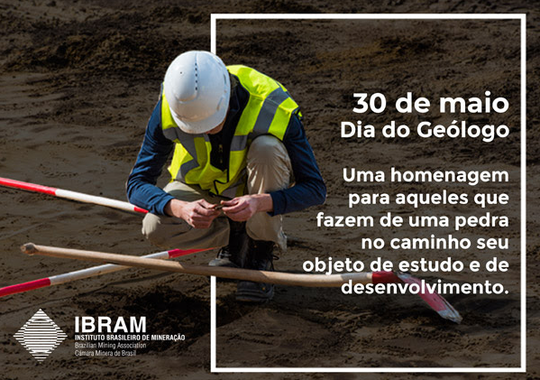
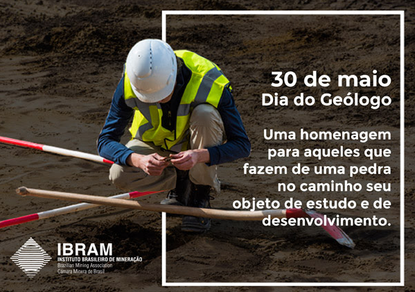

Áreas de atuação de um Geologo:
Geofísica – reconhece as propriedades físicas da Terra. Por exemplo, estuda o campo magnético terrestre (intensidade, configuração e variação), o fluxo de calor interno da Terra, o movimento das ondas sísmicas, que estão associadas aos terremotos. A geofísica combina geologia com a física para facilitar a descoberta de gás, óleo, metais, água…
Geoquímica – trata da química do planeta. Atualmente destaca-se a geoquímica sedimentar e a geoquímica orgânica, o novo campo da geoquímica ambiental, além de muitos outros. O grande interesse da geoquímica está na origem e evolução das principais classes de rochas e minerais. O geoquímico estuda especificamente os elementos da natureza – por exemplo, os ciclos geoquímicos do carbono, nitrogênio, fósforo e enxofre; distribuição e abundância de isótopos na natureza e a exploração geoquímica, também chamada de prospecção geoquímica, que é aplicada para a exploração mineral.
Petrologia – trata da origem, estrutura, ocorrência e da história das rochas ígneas, metamórficas e sedimentares. Os petrólogos estudam as mudanças físico-químicas que ocorrem nas rochas e são capazes de fazer um detalhado mapeamento mostrando os tipos de rochas existentes em uma área.
Mineralogia – trata dos minerais encontrados na crosta terrestre, e até mesmo os encontrados ou originados fora dela. A cristalografia estuda a forma externa e a estrutura interna dos cristais naturais ou sintéticos. Há quem considere a mineralogia a arte de identificar os minerais baseando-se nas suas propriedades físicas e químicas. A mineralogia econômica focaliza os processos responsáveis pela formação dos minerais, especialmente os de uso comercial.
Geologia Estrutural – estuda as distorções das rochas, tais como dobras, falhas e fraturas. Usualmente comparando as formas obtidas e as classificando. Essas distorções podem ser vistas tanto macroscopicamente quanto microscopicamente. Os geólogos estruturais são capacitados para localizar armadilhas estruturais que podem conter petróleo, estudar a construção de túneis, localizar aquíferos, identificar jazidas minerais, entre outras atividades. É uma área de ampla atuação do geólogo.
Sedimentologia – refere-se ao estudo dos depósitos sedimentares e das suas origens. Os sedimentólogos estudam inúmeras feições presentes nas rochas sedimentares que podem indicar os ambientes de formação no passado e assim entender os ambientes atuais.
Paleontologia – estuda a vida pré-histórica, tratando do estudo de fósseis de animais e plantas micro e macroscópicos. Os fósseis são importantes indicadores das condições de vida existentes no passado geológico, preservados por meios naturais na crosta terrestre.
Geomorfologia – trabalha com a evolução das feições observadas na superfície da Terra, identificando os principais agentes formadores dessas feições e caracterizando a progressão da ação de agentes como o vento, gelo, água… que afetam o relevo terrestre.
Geologia Econômica – é o ramo da Geologia que estuda a ocorrência e gênese dos jazimentos minerais, procurando identificar suas leis e formas de aproveitamento dos bens minerais, reais e potenciais, tais como:petróleo, gás, carvão, minerais metálicos e não metálicos, materiais de construção, pedras preciosas, água subterrânea, energia geotermal.
Hidrogeologia – A Hidrogeologia atua desde a caracterização hidro-ambiental de uma área até chegar ao planejamento e gestão das águas subterrâneas, enfocando, entre outras, qualidade das águas, poluição, remediação de áreas contaminadas, água e saúde, locação de poços tubulares, construção de poços, avaliação de reservas e recursos hídricos, vulnerabilidade e risco de aquíferos a poluição.
Geologia Ambiental – esse é um campo relativamente novo responsável pela coleta e análise de dados geológicos para evitar ou solucionar problemas oriundos intervenção humana no meio ambiente. Um dos seus ramos é o da Geologia Urbana, que trata dos impactos, geralmente caóticos, gerados sobre o meio ambiente, quando o incontrolável crescimento das cidades agride o ambiente ocasionando catástrofes que afetam diretamente a qualidade de vida da população. Atualmente o geólogo ambiental tem trabalhado bastante na elaboração de EIA (Estudos de Impactos Ambientais) e RIMA (Relatórios de Impacto Ambiental), exigidos antes da execução de grandes obras.

 
